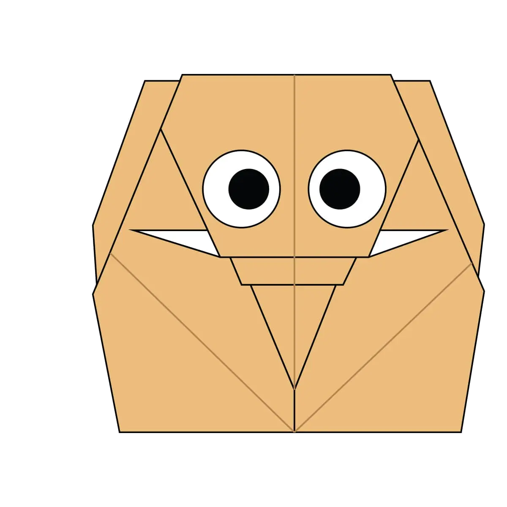
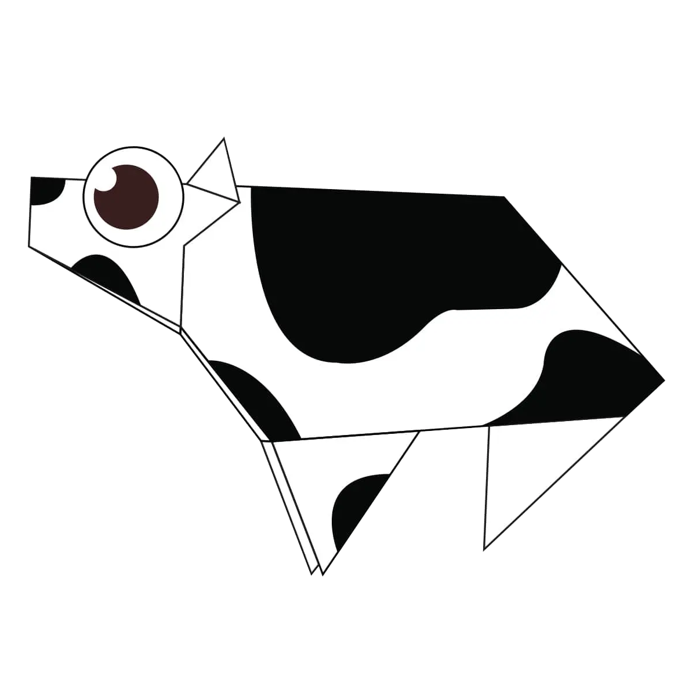
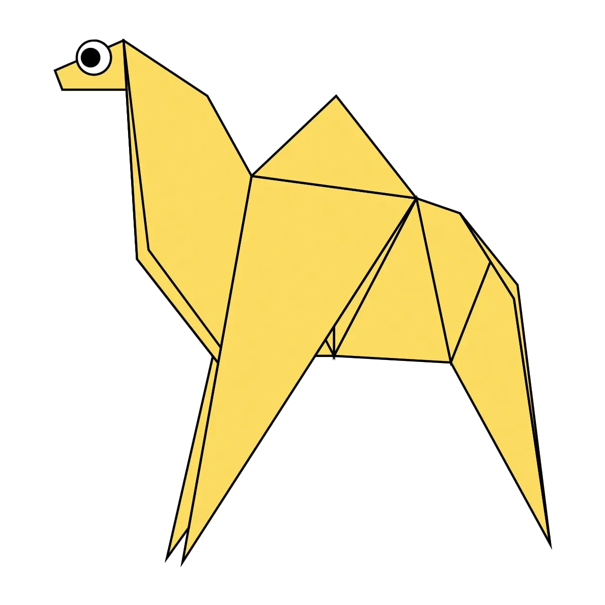
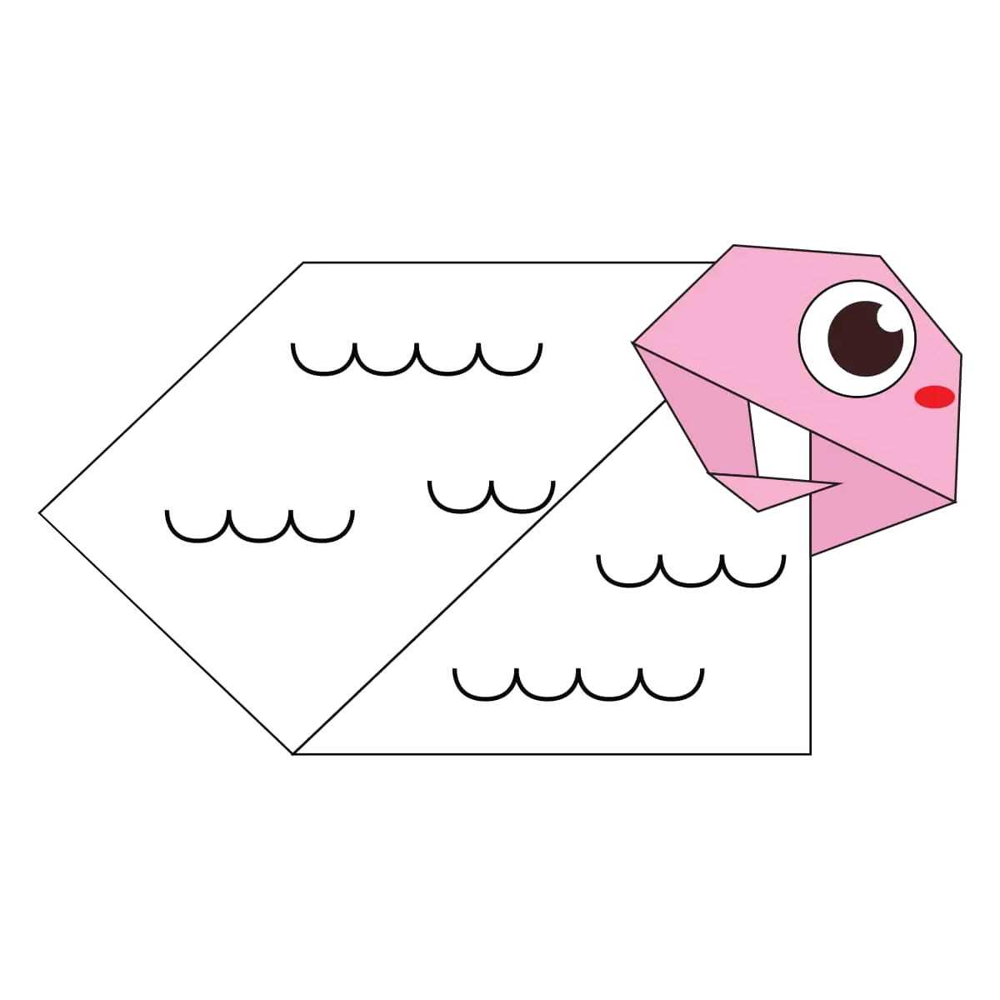
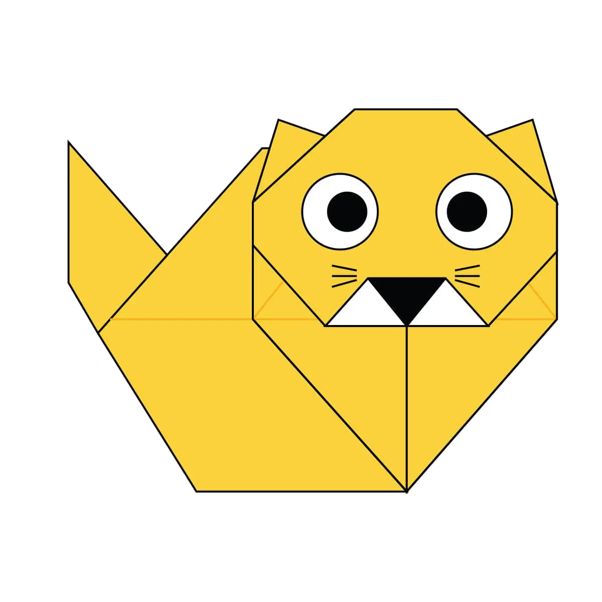

Elephants have around 150,000 muscle units in their trunk.
Elephants have thick skin of length 2.5 cm.
Elephants need up to 150kg of food per day
Elephant

Cows can sleep while they’re standing
Cows spend about 10 hours a day lying down.
There are approximately 98 million cows in the U.S.
The average body temperature of a cow is 102 degrees Fahrenheit.
Cow

Camels can completely shut their nostrils during sandstorms.
When a camel finally does find water, he can drink up to 40 gallons in one go.
Camels are very strong and can carry up to 900 pounds for 25 miles a day.
Camels can travel at up to 40 miles per hour – the same as a racehorse!
Camel

Chameleon

A sheep can recognize up to 50 other sheep faces, and remember them for two years.
There are more then 10000 species of sheeps.
Sheep

Cats can jump up to six times their length.
Cats are nearsighted, but their veiws are better than humans.
Cats are believed to be the only mammals who don’t taste sweetness.